无标题
基本选择器
| 基本选择器 | 描述 |
|---|---|
#id |
根据给定的ID匹配一个元素 |
element |
根据给定的元素名匹配所有元素 |
.class |
根据给定的类匹配元素 |
* |
匹配所有元素 |
selector1,selector2,selectorN |
将每一个选择器匹配到的元素合并后一起返回 |
1 | <div id="div1" class="box">div1(class="box")</div> |
ID 选择器
1 | // 1.选择id为div1的元素 |
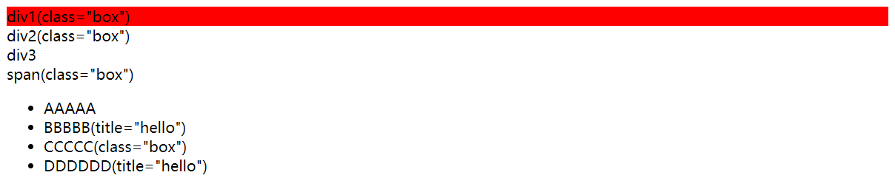
标签选择器
1 | // 2.选择所有的div元素 |
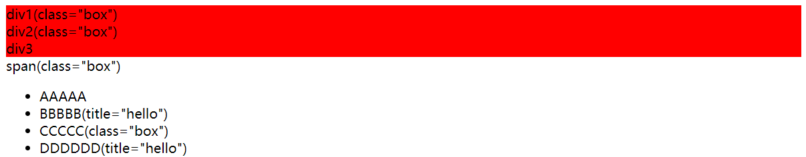
属性选择器
1 | // 3.选择所有class属性为box的元素 |
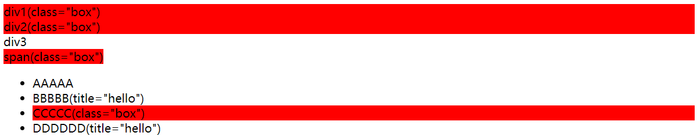
并集选择器
1 | // 4.选择所有的div和span元素 |
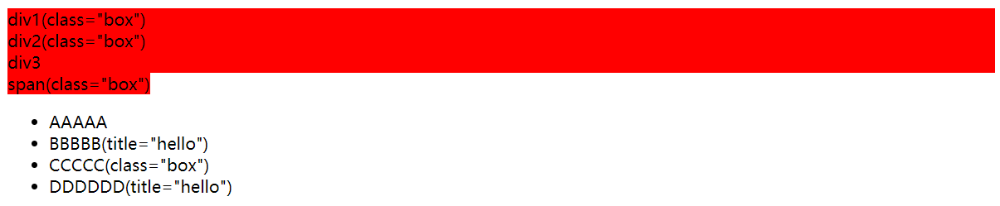
交集选择器
1 | // 5.选择所有class属性为box的div元素 |
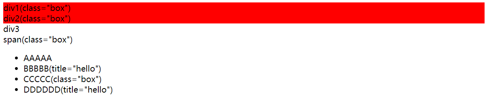
通用选择器
1 | // 6.选择所有元素 |
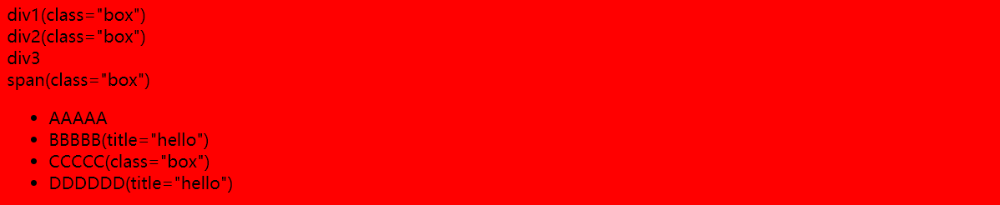
层级选择器
查找子元素，后代元素，兄弟元素的选择器
| 层级选择器 | 描述 |
|---|---|
ancestor descendant |
在给定的祖先元素下匹配所有的后代元素 |
parent > child |
在给定的父元素下匹配所有的子元素 |
prev + next |
匹配所有紧接在 prev 元素后的 next 元素 |
prev ~ siblings |
匹配 prev 元素之后的所有 siblings 元素 |
1 | <ul> |
后代元素选择器
1 | // 1.选中ul下所有的span |
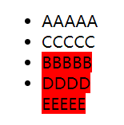
子元素选择器
1 | // 2.选中ul下所有的子元素span |

兄弟选择器
1 | // 3.选中class为box的下一个li |
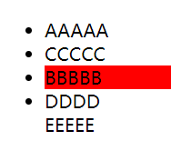
1 | // 4.选中ul下li的class为box的元素后面的所有兄弟元素 |
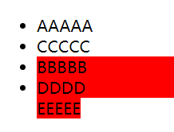
过滤选择器
在原有选择器匹配的元素中进行进一步过滤的选择器
| 分类 | 过滤选择器 | 描述 |
|---|---|---|
| 基本 | :first |
获取第一个元素 |
:last |
获取最后一个元素 | |
:eq(index) |
匹配一个给定索引值的元素 | |
:gt(index) |
匹配所有大于给定索引值的元素 | |
:lt(index) |
匹配所有小于给定索引值的元素 | |
:even |
匹配所有索引值为偶数的元素，从 0 开始计数 | |
:odd |
匹配所有索引值为奇数的元素，从 0 开始计数 | |
:not(selector) |
去除所有与给定选择器匹配的元素 | |
| 内容 | :contains(text) |
匹配包含给定文本的元素 |
:has(selector) |
匹配含有选择器所匹配的元素的元素 | |
:empty |
匹配所有不包含子元素或者文本的空元素 | |
:parent |
匹配含有子元素或者文本的元素 | |
| 可见性 | :hidden |
匹配所有不可见元素，或者type为hidden的元素 |
:visible |
匹配所有的可见元素 | |
| 属性 | [attribute] |
匹配包含给定属性的元素 |
[attribute=value] |
匹配给定的属性是某个特定值的元素 | |
[attribute!=value] |
匹配所有不含有指定的属性，或者属性不等于特定值的元素 | |
[attribute*=value] |
匹配给定的属性是以包含某些值的元素 | |
[selector1][selector2][selectorN] |
复合属性选择器，需要同时满足多个条件时使用 |
1 | <div id="div1" class="box">class为box的div1</div> |
:first
1 | // 1.选择第一个div |
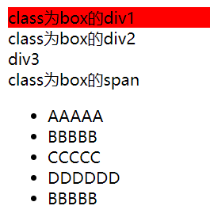
:last
1 | // 2.选择最后一个class为box的元素 |
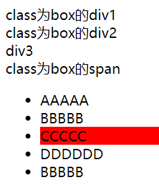
:not
1 | // 3.选择所有class属性不为box的div |
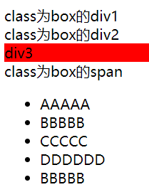
:eq、:gt、:lt
多个选择器是依次执行的，不是同时执行的
1 | // 4.选择第二个和第三个li元素 |
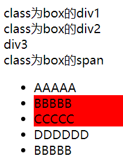
:contains
1 | // 5.选择内容为BBBBB的li |
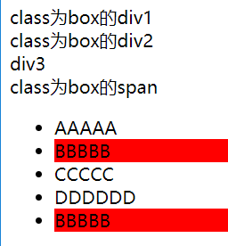
:hidden
1 | // 6.选择隐藏的li |
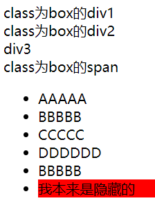
[attribute]
1 | // 7.送择有title属性的li元素 |
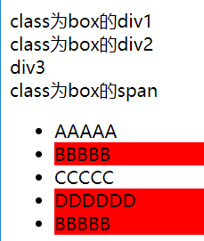
[attribute=value]
1 | // 8.选择所有属性title为hello的li元素 |
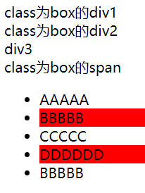
:odd
1 | $('#data tbody > tr:odd').css('backgroundColor', '#ccf'); |
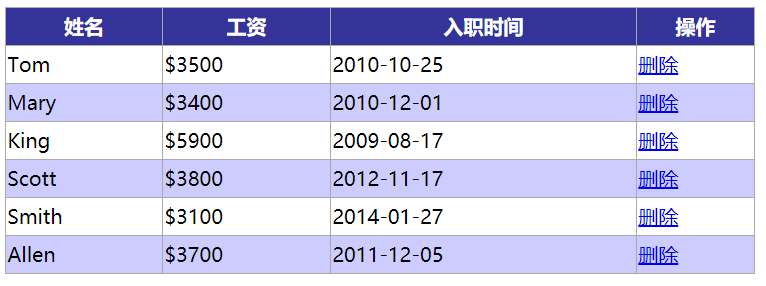
表单选择器
表单和表单对象属性
| 表单选择器 | 描述 |
|---|---|
:input |
匹配所有 input, textarea, select 和 button 元素 |
:text |
匹配所有的单行文本框 |
:password |
匹配所有密码框 |
:radio |
匹配所有单选按钮 |
:checkbox |
匹配所有复选框 |
:submit |
匹配所有提交按钮 |
:reset |
匹配所有重置按钮 |
:button |
匹配所有按钮 |
| 表单对象属性 | 描述 |
:enabled |
匹配所有可用元素 |
:disabled |
匹配所有不可用元素 |
:checked |
匹配所有选中的被选中元素(复选框、单选框等，不包括select中的option) |
:selected |
匹配所有选中的option元素 |
1 | <form> |
:text、:disabled
1 | // 1.选择不可用的文本输入框 |
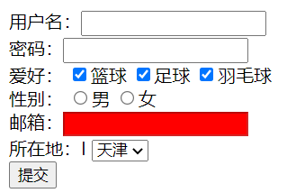
:submit、:checkbox、:checked
1 | // 3.显示选择的城市名称 |
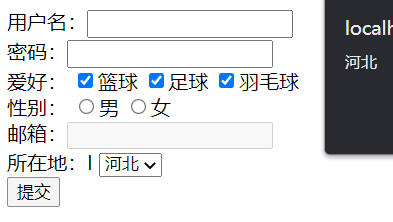
本博客所有文章除特别声明外，均采用 CC BY-NC-SA 4.0 许可协议。转载请注明来源 爱编程的小生！
评论